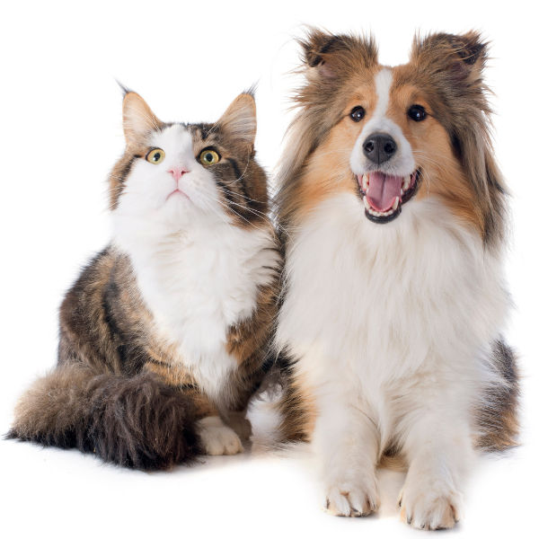
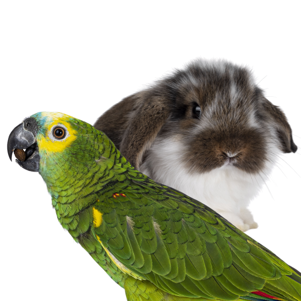
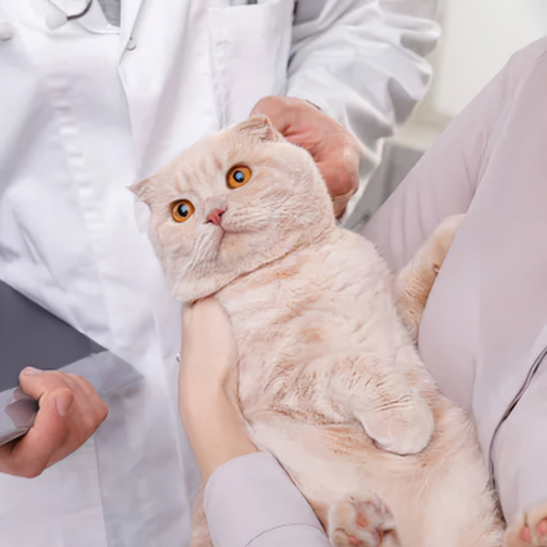

Consulta General Perros y Gatos
En nuestra consulta general realizamos una evaluación clínica completa del estado de salud de tu perro o gato. Nuestro equipo médico revisa detalladamente su peso, pelaje, ojos, oídos, dentadura y ritmo cardíaco para asegurar que todo esté en perfectas condiciones. Además, aprovechamos esta instancia para asesorarte sobre su plan de nutrición, cuidados diarios y medicina preventiva para que tu mascota disfrute de una vida larga y feliz.
- Duración: 30 minutos
- Valor: $15.000
- De lunes a domingo

Consulta General Aves / Conejos
Las mascotas exóticas requieren cuidados muy distintos a los de un perro o un gato, además de un conocimiento clínico altamente específico. Durante esta consulta, nuestro veterinario especialista evalúa el comportamiento, la dieta, el plumaje o pelaje y el estado físico general de tu ave o conejo, logrando detectar a tiempo cualquier anomalía. Te entregaremos pautas de manejo ambiental y nutricional estrictamente adaptadas a su especie.
- Duración: 30 minutos
- Valor: $18.000
- De lunes a domingo

Consulta Urgencia Perros y Gatos
Sabemos que las emergencias no avisan. Si tu mascota sufre un accidente, presenta dolor agudo, dificultad respiratoria, intoxicación o síntomas graves repentinos, nuestro equipo de turno está preparado para actuar de inmediato. Contamos con el equipamiento necesario para la estabilización del paciente, manejo del dolor y primeros auxilios, priorizando siempre la vida y el bienestar de tu compañero ante cualquier eventualidad crítica.
- Duración: 30 minutos
- Valor: $25.000 (+$10.000 fuera de horario)
- Atención 24/7
